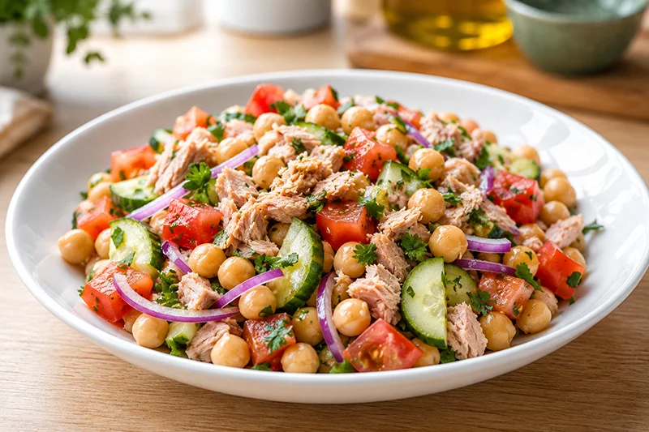

Receta saludable
Ensalada de atún, garbanzos y tomate
La ensalada de atún, garbanzos y tomate es una opción rápida y equilibrada que combina legumbres, proteína y verduras frescas. Ideal para preparar con antelación y disfrutar tanto en casa como fuera.
Ingredientes
- 250 g de garbanzos cocidos
- 2 latas de atún al natural
- 2 tomates medianos
- 1/2 cebolla morada
- 1/2 pepino
- Perejil fresco picado
- 1 cucharada de aceite de oliva virgen extra
- Zumo de medio limón
- Sal
- Pimienta negra
Preparación
- Aclara y escurre bien los garbanzos.
- Corta los tomates, el pepino y la cebolla en trozos pequeños.
- Escurre el atún y desmenúzalo.
- Mezcla todos los ingredientes en un bol amplio.
- Aliña con el aceite de oliva, el zumo de limón, sal y pimienta.
- Espolvorea perejil fresco picado y sirve inmediatamente o deja reposar unos minutos en la nevera.
Consejo práctico
Aclara bien los garbanzos bajo el grifo antes de utilizarlos para eliminar el líquido de conservación y reducir parte del sodio. Añade unas aceitunas negras para darle un toque mediterráneo.